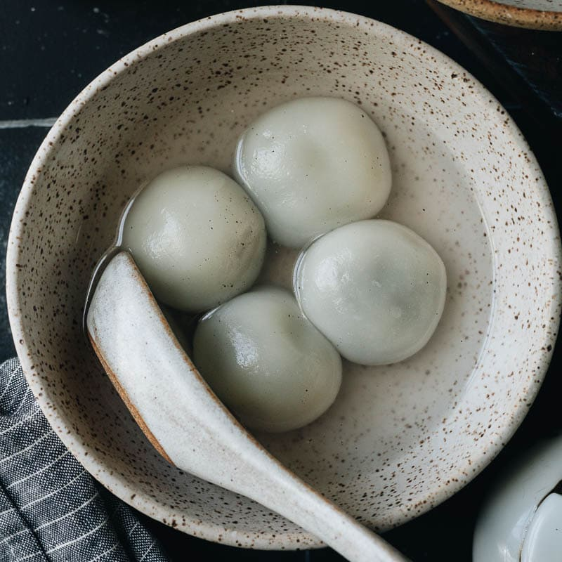

Tang Yuan

Description
Tang Yuan is a delightful Chinese dessert made of glutinous rice flour filled with sweet or savory fillings and served in a warm, fragrant syrup. These colorful and chewy rice dumplings symbolize togetherness and are commonly enjoyed during festivals and special occasions in China.
Ingredients
- Glutinous rice flour
- Water
- Filling (can be sweet or savory, such as red bean paste, sesame paste, or minced meat)
- Syrup (made with sugar and water)
Steps
- Mix glutinous rice flour with water to form a dough.
- Divide the dough into small portions and flatten them into circles.
- Add your chosen filling to the center of each dough circle.
- Seal the dumplings, rolling them into smooth balls.
- Boil the Tang Yuan until they float to the surface.
- Prepare the syrup by simmering sugar and water.
- Serve the Tang Yuan in the warm syrup, creating a delicious and comforting dessert. Enjoy!